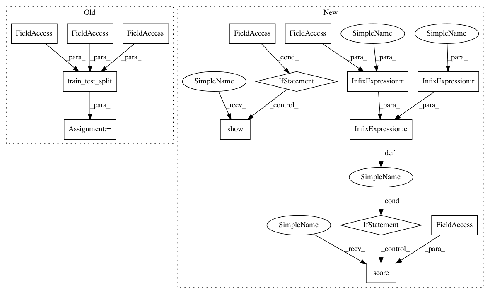

2f2e5a2534e105f07e2f0db40f67e4e4eb8cff92,yellowbrick/classifier/classification_report.py,,classification_report,#,290
Before Change
)
// Create the train and test splits
X_train, X_test, y_train, y_test = train_test_split(
X, y, test_size=test_size, random_state=random_state
)
// Fit and transform the visualizer (calls draw)
visualizer.fit(X_train, y_train, **kwargs)
visualizer.score(X_test, y_test)
After Change
visualizer.fit(X_train, y_train)
// Score the visualizer
if X_test is not None and y_test is not None:
visualizer.score(X_test, y_test)
elif X_test is not None or y_test is not None:
raise YellowbrickValueError(
"both X_test and y_test are required if one is specified"
)
else:
visualizer.score(X_train, y_train)
// Draw the final visualization
if show:
visualizer.show()
else:
visualizer.finalize()
// Return the visualizer
return visualizer
In pattern: SUPERPATTERN
Frequency: 3
Non-data size: 15
Instances
Project Name: DistrictDataLabs/yellowbrick
Commit Name: 2f2e5a2534e105f07e2f0db40f67e4e4eb8cff92
Time: 2020-02-09
Author: Kautumn06@users.noreply.github.com
File Name: yellowbrick/classifier/classification_report.py
Class Name:
Method Name: classification_report
Project Name: DistrictDataLabs/yellowbrick
Commit Name: 2f2e5a2534e105f07e2f0db40f67e4e4eb8cff92
Time: 2020-02-09
Author: Kautumn06@users.noreply.github.com
File Name: yellowbrick/classifier/classification_report.py
Class Name:
Method Name: classification_report
Project Name: DistrictDataLabs/yellowbrick
Commit Name: 2671cbab96f2893748cbfe9791acd19589b019bb
Time: 2020-02-07
Author: 46731745+mmorrison1670@users.noreply.github.com
File Name: yellowbrick/classifier/confusion_matrix.py
Class Name:
Method Name: confusion_matrix
Project Name: DistrictDataLabs/yellowbrick
Commit Name: a509d63e8b05f66150afcfa9216b2cbd9b01ce9c
Time: 2019-10-19
Author: 40185521+mchestnut91@users.noreply.github.com
File Name: yellowbrick/classifier/rocauc.py
Class Name:
Method Name: roc_auc